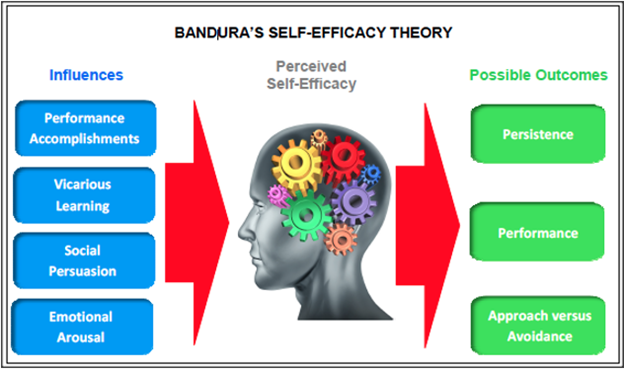

Click the right link to download Poster Slides Download
Our Motivation
• During the global COVID-19 pandemic in Spring 2020, college engineering classes
shifted suddenly in teaching modality from in-person, to online instruction
• Was engineering-related self-efficacy and outcome expectations impacted during this
period?
A little background
1. Social Cognitive Career Theory
Social Cognitive Career Theory (SCCT; Lent, Brown, and Hackett, 1994; 2000),
describes how the social cognitions of self-efficacy and outcome
expectations are related to the development of career-related interests, choice goals,
actions and performance

Figure 1: Overview of SCCT model (based on Lent et al. 1994)

Relationship between self-efficacy and outcomes
(https://www.ovpconsulting.com/weekly/2018/11/16/086p3teoj8d0dbvuwbt51sh7qkc63c）
2. Self-Efficacy
- An individual’s belief in their ability to plan and complete a specific task (Bandura 1977)
- Hypothesized to relate to avoiding or approaching certain career options, the quality of
performance, and their persistence when faced with obstacles

Figure 3: Sources of Self-efficacy (https://www.simplypsychology.org/self-efficacy.html)
3. Outcome Expectations
Expected outcomes and anticipated consequences for engaging in a particular behavior
The Connection |
|---|
| - Social cognitions of self-efficacy and outcome expectations are significant predictors of choice goals and actions in STEM fields
- Social cognitions may also support engineering persistence (staying in the engineering major or continuing the engineering degree through perceived challenges) |
Our Question
How would students’ social cognitions be impacted by the sudden shifts in teaching instruction during Spring 2020?
What We Did
- Administered surveys at 3 time points during the during the 16-week academic spring
semester of 2020
- Sample: Over 200 students in 8 engineering courses
What we found
- Results demonstrated a statistically significant increase in engineering self-efficacy
scores on the two utilized measures between Time 1 and Time 3 but not between the
other time points in the overall results. Although the increase was statistically significant
(p < 0.01; p < 0.5) the magnitude of the increase was marginal (only 7%-8% increase in
the mean score).
- Results demonstrated a statistically significant increase in engineering self-efficacy
scores on the two utilized measures between Time 1 and Time 3 but not between the
other time points in the overall results. Although the increase was statistically significant
(p < 0.01; p < 0.5) the magnitude of the increase was marginal (only 7%-8% increase in
the mean score).

Figure 4: Trend of Mean Scores for Each Measure
Last Thoughts/Next Steps
- Despite the abrupt transition online to remote education, students increased in their
confidence in their ability to succeed in their engineering coursework (self-efficacy), and
for the most part still intend to major and find employment in engineering (persistence).
- Will form Faculty Learning Community to improve teaching practices. Future study will
look at if changes in teaching practices and impact the social cognitions.
Question? ! -- Please Contact Us!
Engineering Faculty Learning Community
This learning community is part of a NSF funded study to evaluate the effect of changes in teaching practices on student social cognitions.
Project Goals:
- To increase the participation of women in engineering through enhanced social cognitions which have been linked to career outcomes.
- To create a learning community comprised of engineering faculty to learn about social cognitive based teaching practices.
- To support faculty in designing and implementing these teaching practices.
- To assess the effectiveness of social cognitive based teaching practices on engineering students’ self-efficacy and outcome expectations.
Research Team
- Sarah Orton, Associate Professor, Civil and Environmental Engineering
ortons@missouri.edu - Rose Marra, Professor, School of Information Science & Learning Technologies
rmarra@missouri.edu - Lisa Y. Flores, Professor, Department of Educational, School & Counseling Psychology
floresly@missouri.edu - Fan Yu, PhD student, School of Information Science & Learning Technologies
fyu@mail.missouri.com - Johanna Milord, PhD student, Department of Educational, School & Counseling Psychology
milordj@mail.missouri.edu